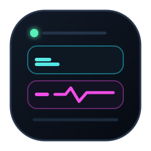

CPU
47%
GPU
18%
RAM
23.5 / 30.9 GB
NET
1.6M ↓ 118K ↑
PING
12 ms
WEATHER
23°

OPS MONITORv3.3 Get v3.3OPS MONITOR // WINDOWS 11
Native hardware telemetry, local weather intelligence, and a desktop widget you can redesign down to the pixel. No account. No cloud collector. No visual dead weight.
Everything shown is a design token. Try the controls below.
01 // FORMS
Go nearly invisible, stack detail vertically, or stretch across an ultrawide display. Layout safety rules keep every form aligned and readable.
02 // WIDGET DESIGNER
Start with a visual system, then tune palette, glass, geometry, typography, motion, visibility, and individual modules. Save the result as a portable .opsdesign file.
ARGB palette, opacity, glass, borders, radii, gaps, padding, progress and sparklines.
Font family, five size controls, four weights, minimum readability and tabular numerals.
Surface, border, text, track, title, icon, geometry, graph, type, precision, size and visualization for each card.
Undo/redo, contrast analysis, clamped values, atomic persistence and portable design packages.
03 // TELEMETRY
Native providers poll independently and never overlap themselves. The UI renders only meaningful changes, keeping the widget responsive without becoming the workload.
Load · clocks · package temperature · per-core sensors
WINDOWS + SENSOR BRIDGELoad · temperature · VRAM · power · fan · clocks
NVML + VENDOR-NEUTRAL FALLBACKRAM used/total · capacity · activity · SMART telemetry
NATIVE + HARDWARE CATALOGDownload · upload · ping · jitter · rolling packet loss
ACTIVE ADAPTER + ICMPBattery · draw · remaining time · battery-saver adaptation
WINDOWS POWER APIPin up to three curated or dynamic hardware metrics per module
PROTECTED LOCAL BROKER04 // WEATHER INTELLIGENCE
Local conditions prioritize Slovenia’s ARSO observation network, then combine forecast intelligence, radar, air quality, warnings, and map layers into one focused weather suite.
05 // ARCHITECTURE
OPS Monitor is designed like instrumentation: bounded, observable, recoverable, and quiet when nothing changes.
Your hardware data stays on your PC.
The desktop widget is native .NET/WPF.
Providers never overlap their own work.
Watchdogs, bounded logs, recovery backoff.
06 // RELEASE 3.3
Version 3.3 turns Studio into a complete design workbench, repairs Mini preview parity at 80%, and keeps brief temperature or network gaps from flashing unavailable.
Override color, surface, border, type, spacing, icon, graph, and visualization without breaking compact safety rules.
The 80% Mini now shares its exact row, padding, and sizing contract with the live widget.
Recent temperature and connectivity readings remain visible as stale through short provider misses.
Expanded design packages round-trip every new global and per-module token with safe migration.
OPS MONITOR // v3.3
Free, open source, and built for Windows 11.
dotnet build native/OpsMonitor.slnx -c Release